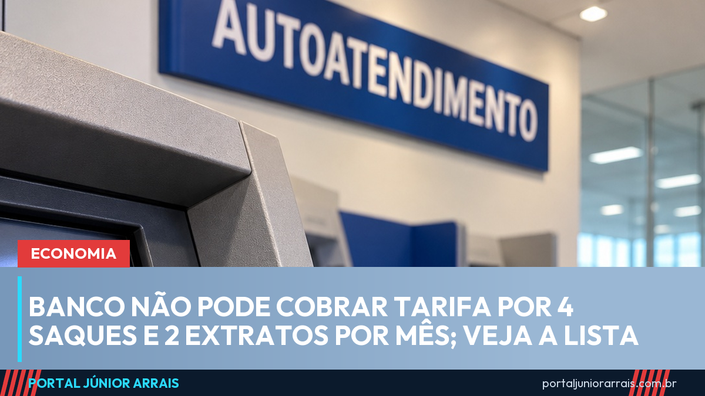

Tarifa bancária: os serviços que o banco não pode cobrar e como sair do pacote

Todo banco tem de oferecer, na conta corrente de pessoa física, uma lista de serviços essenciais sem tarifa: cartão de débito, até 4 saques, 2 transferências entre contas do mesmo banco e 2 extratos por mês, entre outros. A regra é da Resolução 3.919/2010 do Conselho Monetário Nacional, que segue em vigor com atualizações. E ninguém é obrigado a pagar pacote: o cliente pode usar só os serviços sem tarifa.
O que o banco não pode cobrar na conta corrente
O artigo 2º da resolução proíbe tarifa sobre estes serviços:
- fornecimento do cartão de débito e da segunda via, salvo quando o cliente pede reposição por perda, roubo ou dano;
- até 4 saques por mês, no caixa ou no terminal de autoatendimento;
- até 2 transferências por mês entre contas do mesmo banco;
- até 2 extratos por mês com a movimentação dos últimos 30 dias;
- consultas pela internet e compensação de cheques;
- até 10 folhas de cheque por mês, para quem cumpre as regras para usar cheque;
- o extrato anual com tudo o que foi cobrado de tarifa no ano anterior.
Saques feitos no caixa eletrônico em um intervalo de até 30 minutos contam como um só saque. A cota é por conta, mesmo que ela tenha dois titulares, e não acumula para o mês seguinte. Na conta que, pelo contrato, funciona só por meios eletrônicos, todos os serviços feitos pelo aplicativo, pela internet ou no caixa eletrônico ficam sem tarifa.
A poupança tem lista própria: cartão, 2 saques, 2 transferências para conta do mesmo titular e 2 extratos por mês. O Pix feito por pessoa física para transferir dinheiro ou pagar compras também não tem tarifa, por regra própria do Banco Central.
Pacote de serviços é escolha, não obrigação
O artigo 9º deixa a decisão com o cliente: pagar só pelos serviços que usar ou aderir a um pacote. O pacote precisa ser contratado por contrato específico (art. 8º). O banco que oferece pacotes também tem de oferecer o pacote padronizado, cujo preço não pode passar da soma das tarifas avulsas dos serviços que ele inclui (art. 6º).
Quem paga pacote e usa pouco a conta pode pedir para ficar só com os serviços essenciais. Se aparece no extrato uma cobrança que você nunca contratou, peça o cancelamento e a devolução. O Código de Defesa do Consumidor prevê a devolução em dobro do valor cobrado sem razão, salvo engano justificável (art. 42). Veja mais na matéria sobre cobrança abusiva.
Conta-salário tem regra própria
A conta-salário é aberta pela empresa, só para receber o pagamento. Pela Resolução CMN 5.058/2022, o trabalhador não paga manutenção da conta, cartão de débito, até 5 saques a cada depósito do salário, 2 extratos e 2 consultas de saldo. Também não paga para transferir o salário para outra conta em seu nome, a chamada portabilidade salarial.
O Banco Central já publicou a norma que vai substituir essa regra a partir de julho de 2027. Ela mantém os serviços sem tarifa e passa a contar os 5 saques por mês.
Cuidado com golpe
Golpistas se aproveitam do assunto. Ligam dizendo que são da central do banco e que há uma tarifa indevida para devolver. Para isso, pedem senha, código recebido por mensagem ou uma transferência para uma suposta conta de segurança. O banco não pede nada disso. Desligue e procure o banco pelos canais oficiais, que estão no cartão ou no aplicativo.
Se a cobrança indevida continuar, reclame no SAC e na ouvidoria do banco e guarde os protocolos. Também é possível registrar queixa no Banco Central, no Procon e no consumidor.gov.br. Se o dinheiro já saiu da conta por fraude, leia como funciona o pedido de devolução pelo MED e procure um profissional de sua confiança.
Fontes oficiais
- Resolução CMN 3.919/2010 — tarifas bancárias
- Resolução CMN 5.058/2022 — conta-salário
- Resolução BCB 566/2026 — conta-salário (vale a partir de julho de 2027)
- Código de Defesa do Consumidor — Lei 8.078/1990 (art. 42)
Conteúdo informativo — não substitui orientação individualizada sobre o seu caso.
Júnior Arrais · Editor do Portal Júnior Arrais
Comunicador de Ubá (MG). Escreve todos os dias sobre benefícios sociais, INSS, trabalho e economia do dia a dia, a partir do Diário Oficial, de portarias e de fontes oficiais, em linguagem simples. Conheça a linha editorial e a política de correções do portal.